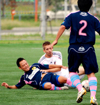

|  |
|
Goalscorers, Ma & Toby enjoy a little cuddle on the floor while vying for the ball.
|
Panthers Earn First Win
Fukuda Denshi, Sunday 26th September
After 2 successive defeats in the opening 2 games the Panthers needed a result against a Sala team who had also made a slow start to the season with 1 point from 2 games. A few surprises pre kick-off, losing 2 players through injury including our big centre half, forced a re-shuffle that saw Peter Swinney move into centre half against his former club.
The biggest surprise came from the Panthers' Brazilian midfielder Frank who rocked up in a rapid Audi sports car (we still don't know exactly who it belongs to) but no models accompanied him this time unfortunately. After spreading out 8 people between 3 cars from Shibuya we were on our way to Chiba hoping not to run into the JEF Utd traffic.
more
BC
El Diego Denied points by ‘Elbow’ of God
Horisaki, Sunday 26th September
Last time King George FC met El Diego in Horisaki Koen, KGFC was in its infancy and El Diego played a neat, attacking brand of football for which their namesake was renowned. The outcome; 3-2 to El Diego. Almost two years on both teams, now playing in the second division, went into the game looking for their first win of the new season.
more
BS
Sho Goes on as YCAC 'Zimmered'
YC&AC, Sunday 26th September
BFC made it three wins out of three with a 4-3 win at rivals YCAC in a see-saw game capped by another double from Shosuke Yamagishi and a Shergar sighting.
more
AH
Vags Beat Embassy in Clean Match Report Shocker
 |
|
Ken Tsurumi has a first half shot as Rob Horsfield blocks & Gary Wilson looks on.
|
Fukuda Denshi, Sunday 26th September
As we started the walk from Soga station to Fukuda Denshi there was the familiar ‘Match Day’ tension and crackle in the air. Vendors lined the way to the stadium and people walking the streets* could purchase Donner kebabs, yakitori and beer at the stalls. New recruit Nick Pike was obviously impressed at how big the build up for a Vagabonds game is and how big the stadium was too…….until he realized that we weren’t playing JEF united and the pitch is actually behind the stadium proper.
Vagabonds clinical organizational machine was in evidence as we not only had remembered that the Embassy play in red and remembered that Muzzy lost our bibs, but actually remembered to buy some in the frantic 3 month period since we last played them. Thanks Steve. more
RS
Rooney Tart Dad has Heart Attack
Hachioji Park, Monday 20th September
Sorry about the Sun headline but I have to take control of the match report title otherwise I’m stuck with ‘Vags grind out 4 goal thriller in Saitama’ (and that’s without any dubious puns….)
The Vags pitched up at the venerable Hachioji-koen riven with rumours of various infidelities amongst the ranks. A couple of heavy weight superstars were spotted down The Pong with fit women allegedly costing 250 sweet ones for an evening.
All played very well today.
Don’t want to sound sexist but there is something to be said and all that… more
RS
Zippy start from BEFC as George Bungles Div2 Debut
Horisaki Koen, Saunday 12th September
New kits, new opposition, new pitch, and thankfully a renewed vigor about BEFC following a distinctly average TML7. A first trek out to Hoirsaki Koen proved fruitful as a first ever clash with King George yielded a 5-1 victory and plenty of positives.
more
RH
Geckoes Edge Panthers in Close Battle
|
|
Andy Gill feels the full force of Tom Thurman's challenge.
|
Fukuda Denshi, Saturday 11th September
On a balmy night in the far-flung reaches of Chiba, the Geckoes battled bravely to 3 hard-earned points against a strong Panthers side.
The first half started off fairly evenly, but it was the Geckoes who would strike first.
After Andy Gill beautifully cushioned the ball off his back (he went up for a header, got spun round and the ball hit him on the arse) the ball broke to Scandinavian schemer Mikel Troen, who took a touch to steady himself before neatly dispatching a volley into the corner of the Panthers net.
more
AG
Ballsy British Eat Swiss Cheese
Hachioji Park, Saturday 11th September
BFC continued their fine start to the season with another clean sheet and a much deserved 3.0 victory over Swiss Kickers. In the words of the referee, “It wasn’t the most beautiful game I’ve ever seen”, but there was still plenty to admire on the pitch - particularly BFC’s dazzling new neon orange, black and white kit. Not everyone was impressed with the new Blackpool image however; “That’s Schoolboy” remarked Jon Day, when discovering the numbered shorts. more
AH
Marathon Man
105 Marathons in 105 Days Around Britain - Ex Shane Captain/Keeper sets out for World Record!
|
|
It takes a special kind of person to go out and run marathon for charity and we've always known Neil is a bit 'special',
|
England, 10th September
A marathon attempt of mammoth proportions for Cancer Research UK.
On September 10th 2010, Neil O’Maonaigh-Lennon will set out from Brighton, England and begin to run, anticlockwise, around Britain. His aim is to run 105 Marathons in 105 Days. Neil will attempt to run every step of the way to raise money for Cancer Research. He also hopes to set a World Record (unofficial) for the most consecutive Marathons run. The current Guinness World Record is 52 Marathons in 52 Days. Neil O'Maonaigh-Lennon coined the word "marathonmad." Running isn't a chore for Neil, it's a joy. He's run marathons in Chicago, Phuket, Dublin and the list goes on ..., and he's run around an entire country already ... This guy, well, he'll just keep on running, so get behind him! .... It's MarathonMad105; so do up your laces and hold on tight!.
Visit his website here for more information and to contribute.
FJ
First Division Impressions
|
|
Last years top scorer Ma tries his luck in Div 1 to no avail against Champs Hibs.
|
Hachioji Park, Saturday 4th September
And so it was that the newly sponsored Panache Panthers made their Divison 1 debut and there was certainly no better way to hit the ground running or rather panting, than the challenge of facing last season's Div 1 champs the mighty Hibs. Confusing sat navs and vomiting centre-backs combined to ensure that 10 of the Panthers arrived with 10 minutes to kick off. No complaints from the 2 Panthers who had arrived on time Frank and Sho who had made sure to intimidate the opposition upon arrival by bring some Division 1 quality girlfriends with them.
more
BC
BFC Off to a Flying Start
|
|
Train beers always taste better after a win, especially 6-0 in your first match!
|
Hachioji Park, Saturday 4th September
Six-nil will do for starters and not bad for a team fielding no major pre-season signings. Clinical finishing and some impressive possession football did for a Sala side which was never really at the races.
Deepest Saitama. Train hell. How many years have we been doing this for. Jay Bailey back in the line-up. Old school. If only we still had the 'Eigotown' kit.
Two minutes gone: 1-0. It usually takes at least an hour to break down Sala, who will have had the hump at letting an up-and-under slip bobble all the way through to Paul Wadsworth, who cheekily prodded the ball home to leave Filet Mignon a little crispy around the edges.
more
AH
|